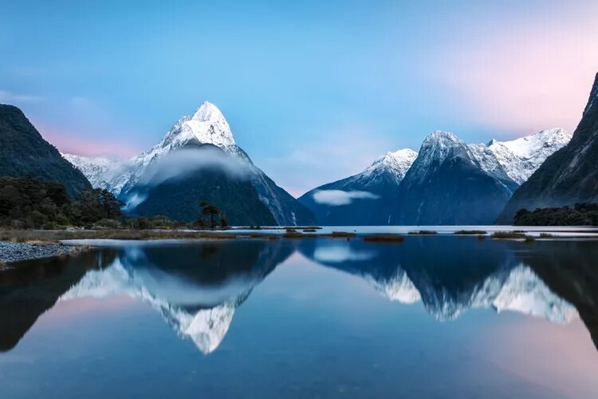

1. Fiordland National Park
Located in the southwest of New Zealand's South Island, it's renowned for its stunning fiords, including Milford Sound and Doubtful Sound.
New Zealand is a stunning island nation in the South Pacific, known for its diverse landscapes, from snow-capped mountains and lush forests to beautiful beaches and serene lakes. It is famous for its Maori heritage, vibrant culture, and outdoor adventure opportunities. Often called "Aotearoa" by the Maori people, meaning "Land of the Long White Cloud," New Zealand is celebrated for its friendly locals and world-class quality of life.

Located in the southwest of New Zealand's South Island, it's renowned for its stunning fiords, including Milford Sound and Doubtful Sound.
Known for its geothermal activity and Maori culture, Rotorua features hot springs, geysers, and traditional Maori performances.
The highest mountain in New Zealand, located in the Southern Alps, offering breathtaking views and hiking opportunities.
A must-visit for fans of "The Lord of the Rings" and "The Hobbit" trilogies, located in Matamata, showcasing the picturesque movie set.
A popular destination for water activities, including sailing, fishing, and dolphin watching, known for its beautiful beaches and marine life.
A UNESCO World Heritage Site, known for its volcanic landscapes, including the Tongariro Alpine Crossing, one of the best hikes in the world.